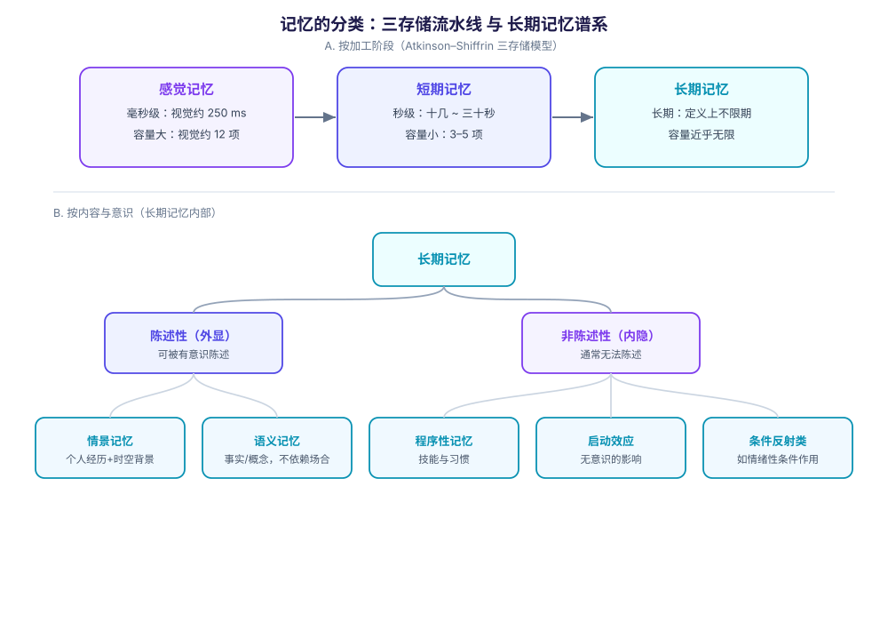

2026-09-15 · Damon + Nemesis · 分类：认知科学 / 学习 · 标签：记忆, 遗忘, 工作记忆, 情景记忆, 干扰理论, 巩固, 遗忘曲线
一、为什么"记忆"必须先分类
"记忆"不是一个单一的东西。说"我记性不好"，可能指完全不同的四件事：记不住刚看到的数字（短期）、想不起某年某月发生的事（情景）、忘了某个事实或单词（语义）、学会了骑车但说不清怎么骑（程序性）。
这几类记忆的容量、持久度、失败方式、甚至脑区都不一样。不分清就讨论"遗忘"，结论必然混乱——因为不同系统的"忘"根本不是同一机制。
下面的分类沿两条正交的线索展开：按加工阶段（信息在哪个环节、能停留多久）和按内容与意识（能否被陈述、是怎样的内容）。
二、按加工阶段：三存储模型
Atkinson 与 Shiffrin 1968 年提出的三存储模型（dual-store / multi-store model）是最经典的框架，把记忆分为感觉记忆 → 短期记忆 → 长期记忆三段流水线。

2.1 感觉记忆（sensory memory）
各感觉通道各有一个极短暂的缓冲寄存器，主要作用是让物理刺激在刺激消失后仍短暂保留，给后续加工争取时间。
- 容量大、时间极短——视觉存储（iconic memory）约保留 250 毫秒，且视觉存储容量可达约 12 个项目；
- 已充分研究的通道有视觉（iconic）、听觉（echoic）、触觉（haptic）；合理推测每个生理感官都有对应存储；
- 它是"原样保留"，还没进入意义加工。
经典演示是转动足够快的风扇看起来留下连续的光环——那就是视觉感觉存储。
2.2 短期记忆（short-term memory）
- 时长：在没有复述或主动维持的情况下，量级是秒；很多教材给的经验值在十几秒到三十秒之间；
- 容量：Miller 1956 提出著名的"神奇数字 7±2"，但这一估计已被更精细的测量取代为 3–5 个项目（Cowan 2001）；
- 它的瓶颈不是"存不下"，而是同时要维持的量太少。
这正是 [[认知负荷]] 理论的地基：教学之所以要考虑负荷，就是因为这个容量是硬的。
2.3 长期记忆（long-term memory）
- 容量近乎无限、持续时间不确定——按定义"informative knowledge is held indefinitely"；
- 与感觉记忆、短期/工作记忆相对而言存在；
- 内部还要继续分（见第四节）。
2.4 三存储对照
| 感觉记忆 | 短期记忆 | 长期记忆 | |
|---|---|---|---|
| 时间尺度 | 毫秒级（视觉约 250 ms） | 秒级（无复述时十几～三十秒） | 长期，定义上不限期 |
| 容量 | 大（视觉约 12 项） | 很小（3–5 项） | 近乎无限 |
| 内容形态 | 通道原生、未加工 | 当前正在处理的少量信息 | 图式化的知识与技能 |
| 主要失败方式 | 快速消退 | 容量溢出、被干扰 | 提取失败、重构失真 |
三、工作记忆：对"短期记忆"的细化
Baddeley 与 Hitch 1974 年提出工作记忆模型，1990 年代后在认知科学中逐渐取代了"单一短期存储"的图景。关键区别在于：工作记忆不仅是"存"，还负责"加工"——它是思考的工作台，不是暂存架。
3.1 四个成分
| 成分 | 作用 | 提出时间 |
|---|---|---|
| 中央执行（central executive） | 控制中心，在子成分之间调度注意资源 | 1974（原模型） |
| 语音环路（phonological loop） | 维持言语性信息，如默念一个电话号 | 1974（原模型） |
| 视觉空间画板（visuospatial sketchpad） | 存储视觉与空间信息，构建心理地图；内部还分视觉子系统 | 1974（原模型） |
| 情景缓冲器（episodic buffer） | 整合语音、视觉、空间乃至语义信息，并把工作记忆与长时记忆连起来 | 2000 年补充 |
容易忽略的一点：情景缓冲器是后期加的。早期三成分模型解释不了"为什么人能同时记住并整合多种通道的信息"，第四成分是对这个缺口的补丁。
3.2 "短期记忆"和"工作记忆"不是同义词
日常和很多科普文会混用，但严格说：
- 短期记忆强调存储时长与容量；
- 工作记忆强调在存储的同时进行操控。
一个只会默念数字的环路测试，测的是前者的容量；一边记数字一边做心算，测的是后者。[[认知负荷]] 关心的始终是后者——因为学习需要的是"边记边算"的能力。
四、按内容与意识：长期记忆的谱系
长期记忆内部最常用的一刀，是切在能否被有意识地陈述（declarative / explicit）上。
长期记忆
├── 陈述性（外显，可陈述）
│ ├── 情景记忆：个人经历，带时间地点背景
│ └── 语义记忆：事实、概念、词义，不依赖具体时空
└── 非陈述性（内隐，通常无法陈述）
├── 程序性记忆：技能与习惯（骑车、打字）
├── 启动效应：先前刺激对后续反应的无意识影响
└── 条件反射等：如情绪性条件作用4.1 陈述性记忆：情景 vs 语义
- 情景记忆（episodic）：记得"昨天在哪个咖啡馆见了谁"。特点是带自我视角和时空坐标，而且高度个人化。
- 语义记忆（semantic）：知道"巴黎是法国首都"。它不依赖记住它的那个场合——你多半想不起第一次知道这件事是什么时候。
两者不是并列的两桶水，而是有演化与依赖关系：语义知识通常由无数次情景经验沉淀而成；而一旦沉淀完成，它就脱离了具体情景独立存在。
4.2 非陈述性记忆：知道"怎么做"但不一定知道"是什么"
- 程序性记忆：骑车、游泳、盲打。它可以长时间不用仍保持，且提取极快，代价是很难用语言完整传达；
- 启动效应：先看到"医生"再看到"护士"反应更快，即便你完全不记得看过前一个词；
- 条件反射类：情绪性条件作用等。
4.3 一张表看清差别
| 陈述性（外显） | 非陈述性（内隐） | |
|---|---|---|
| 意识参与 | 需要有意识回想 | 通常无需意识参与 |
| 典型例子 | 背单词、记事件、记公式 | 骑车、打字、被启动 |
| 语言可传达性 | 高 | 低（"只能意会"） |
| 遗忘的典型表现 | 想不起来、记错细节 | 生疏了、手感没了，但知识性内容说不清 |
| 常见混淆 | 把"语文知识"当纯语义（其实依赖情景） | 把"会做"等同"懂原理"（二者常分离） |
4.4 最容易搞混的一条
"会做"和"能说清"是两套系统。 一个熟练的医生可能说不出自己诊断时用的全部线索；一个能把 SVM 对偶推导写得很漂亮的人，未必能徒手写出可用的核函数实现。反过来也成立：能背出游泳要领，下水依然会沉。
这解释了为什么"看懂了"经常不等于"会做了"——前者常走陈述性通道，后者要走程序性通道，而两者的训练方式完全不同。
五、遗忘：不是一种机制，而是一个家族
"遗忘"在科普叙事里常被简化为"记忆随时间消退"。但至少下面几种机制各自独立，且解释力不同。
5.1 编码失败——根本没进去
信息从未被有效编码，自然无从提取。这不是"丢了"，是"没存"。
判断线索：如果给提示也完全想不起来，且当时注意力根本不在那里，多半是编码问题。
5.2 痕迹衰退（trace decay theory）
该理论认为学习时形成了神经化学／物理层面的"记忆痕迹"，随时间推移痕迹本身衰减。
它的问题：单纯用时间解释不了大量现象。最著名的一击来自 Jenkins 与 Dallenbach 1924 年的实验——他们让被试在睡眠与同等时长的日常活动后测试保持量，结果睡一觉后记得明显更好。两者的时间一样长，差别只在"期间有没有别的活动"。这直接把矛头指向了干扰，而非时间。
睡眠被认为有助于阻止痕迹衰减，但具体机制尚无定论（来源本身也标注了 citation needed）。
5.3 干扰（interference）——目前解释力最强的日常遗忘机制
干扰理论的核心主张：遗忘常常不是痕迹没了，而是别的学习内容在竞争提取路径。
| 类型 | 方向 | 生活例子 |
|---|---|---|
| 前摄干扰（proactive） | 旧记忆干扰新记忆的提取 | 换了新手机号，总下意识拨出旧号码 |
| 倒摄干扰（retroactive） | 新学习干扰旧记忆的提取 | 学了西班牙语后，英语单词一时想不起来 |
两个细节值得记住：
- 前摄干扰在两类中较少见、问题也较小（据来源表述）；
- 干扰强度与编码进长时记忆的程度有关——原本记得越牢，越不容易被干扰。
5.4 提取失败与线索依赖
记忆内容可能完好，但缺少正确的检索线索。最日常的证据是舌尖现象（tip of the tongue）：明知自己知道、甚至能说出首字母或字数，就是取不出来，而且往往过一会儿自行浮现。
自由回忆（free recall）比线索回忆（cued recall）难得多，正是因为后者补上了线索。这也说明："想不起来"不等于"不记得"。
5.5 动机性遗忘
Freud 提出的"压抑"（repression）指把痛苦念头推入无意识。但要如实说明证据状况：主流心理学认为真正的记忆压抑极为罕见，围绕它是否发生、发生频率如何，学界一直有争论。
更稳妥的当代说法是：情绪与动机确实会影响什么被记住、什么被回避回忆，但这不等于存在一个自动"删除"开关。
5.6 巩固与再巩固——遗忘可能发生在"固化之前"
记忆形成后并非立即稳定，而是要经历巩固（consolidation）逐步固化。在巩固完成之前，记忆更容易被中断或覆盖——这解释了为什么刚学完就受到强干扰，损失特别大。
反过来，已被提取的记忆会短暂回到不稳定状态，需要再巩固（reconsolidation）。这一机制既是治疗上的机会（可以改写创伤记忆的情绪负荷），也是风险（错误信息可能借此时机混入）。
5.7 一条时间轴：遗忘发生在哪一步
把上面的机制按信息流的顺序摆开，会看得更清楚：
| 阶段 | 可能的失败 | 对应理论 |
|---|---|---|
| 输入 | 没注意到／没加工 | 编码失败 |
| 刚形成 | 巩固被打断 | 巩固理论 |
| 保持期间 | 痕迹衰减／被新学习干扰 | 衰退理论／干扰理论 |
| 需要用时 | 找不到检索线索 | 线索依赖遗忘、舌尖现象 |
| 回忆之后 | 被事后信息改写 | 再巩固、重构性记忆 |
同一次"想不起来"，可能落在任意一行。 这也是为什么"如何防止遗忘"没有单一答案。
六、遗忘的量化：遗忘曲线
Ebbinghaus 1885 年用无意义音节做的自我实验，给出了遗忘的第一条定量曲线：衰减先快后慢。本库另有专题页（progressive-kg 的「艾宾浩斯遗忘曲线」节点）记录其公式与计算值，这里只强调三个容易被忽略的点：
- 原始实验的材料是无意义音节——刻意排除语义联结。真实学习材料的意义性会显著减慢衰减，所以曲线是下界式的悲观估计，不能直接套到"背单词"或"学概念"；
- 曲线是群体/平均意义上的定性规律，参数因人因材料差异很大，不能当作个体精确预测；
- Ebbinghaus 本人研究的是遗忘速率，并没有研究间隔重复的作用——"遗忘曲线 → 间隔重复"这条推论是后续研究补上的。
七、影响遗忘速度的因素
综合上面各机制的实证结果，可以列出几条明确的调节因素：
- 加工深度（Craik 与 Lockhart 1972 的加工水平模型）：按语音、字形等浅层特征加工，记忆痕迹弱；按语义、意义做深层加工，痕迹更强更久。这一框架常被用来批评"复述是通向长时记忆的唯一通道"的旧假设——复述的次数不如加工的方式重要。
- 材料的组织与意义：有结构、能挂到已有知识上的材料，衰减慢得多。
- 间隔与复习：分散学习优于集中学习（间隔效应）。
- 提取练习：主动回忆比反复阅读更有效——每次成功提取本身就是一次强化。
- 睡眠：在睡眠后测试，保持量明显更好（Jenkins 与 Dallenbach 1924）。
- 干扰量：期间穿插的相似学习越多，倒摄干扰越强。
- 编码时的注意是否充足：注意力分散的输入几乎等于没编码。
八、记忆是重构的，不是回放
这是最反直觉、也最实用的一节。
重构性记忆（reconstructive memory）理论指出：回忆不是从档案柜里取出原件，而是一次重建——受知觉、想象、语义知识与图式共同影响。当情景记忆里有缺口时，个体会用已有知识和图式把洞填上，产出一个"更完整、更连贯"的版本。
后果是：
- 记忆天然容易受到事后信息影响（错误信息效应，misinformation effect）——提问的方式、别人的叙述、媒体报道都可能被吸收进"自己的记忆"；
- 回忆的自信程度与准确度不必然相关。一段被反复讲述、越来越流畅的记忆，可能是被重构得最多次的那一段；
- 目击者证词因此被大量研究证明相当不可靠，这也是法律程序里对辨识流程做严格约束的原因。
所以第四、五节里说的"记忆痕迹"，在情景记忆这一路要打个折扣：即使痕迹还在，你取回来的也可能已经被改写过了。
九、常见误读清单
把上面容易踩的坑集中列一下：
| 常见说法 | 问题所在 |
|---|---|
| "短期记忆能存 7±2 个" | Miller 的 7±2 已被更精细的测量取代为 3–5 项，别再把 7 当硬指标 |
| "短期记忆 = 工作记忆" | 前者强调存储，后者强调边存边加工，测量与含义都不同 |
| "遗忘就是记忆随时间消退" | 时间是弱解释；干扰、提取失败、编码失败往往更贴近真实原因 |
| "遗忘曲线能预测我会忘多少" | 它是平均意义上的定性规律，且原始材料是无意义音节，属悲观下界 |
| "记住 = 录像回放" | 情景记忆是重构的，会被事后信息改写，自信度≠准确度 |
| "学过就忘说明记性差" | 也可能只走了浅层加工通道，或编码时就注意力不足 |
| "会做 = 懂了" | 程序性与陈述性两套系统可以严重分离 |
| "痛苦记忆能被主动压抑删除" | 主流心理学认为真正的压抑极为罕见，证据争议大 |
十、实践启示
对学习与知识管理
- 想让信息进入长期记忆，改变加工方式比增加重复次数更有效——问"它和什么有关、为什么成立"，而不是"再看一遍"；
- 复习要分散，且优先在遗忘曲线的陡降段之前介入；
- 用主动回忆（合上资料自己讲一遍）代替重读，效果差异很大；
- 给新学的知识挂上已有结构（图式），能显著降低衰减速度——这也是本知识库用双链组织概念的一个理由。
对信息输入的习惯
- 注意力不在的输入不算学习，分心状态下刷十遍等于零遍；
- 新学内容后尽量避免紧接着学习高度相似的内容（倒摄干扰），换领域反而互相保护；
- 睡眠不是可选项，它参与了巩固。
对自己记忆的预期管理
- "想不起来"多数时候是线索问题而非存储问题——换个环境、换个提问方式常常就能取出；
- 重要事实（时间、数字、承诺）不要依赖记忆，因为它在被回忆的过程中会被悄悄改写。
参考来源
- Wikipedia: Memory — 记忆的总览与主要分类框架
- Wikipedia: Atkinson–Shiffrin memory model — 三存储模型原始结构与后续批评（含对复述作为唯一转移机制的质疑）
- Wikipedia: Sensory memory — 感觉记忆的通道划分、视觉存储约 250 ms、容量约 12 项
- Wikipedia: Short-term memory — 时长量级、容量估计由 7 项修正为 3–5 项
- Wikipedia: Long-term memory — 长时记忆的定义、外显/内隐与各子类的划分
- Wikipedia: Working memory — Baddeley 模型的四个成分与 2000 年增设情景缓冲器
- Wikipedia: Declarative memory — 陈述性记忆的范围与子类
- Wikipedia: Procedural memory — 程序性记忆的特征与语言可传达性
- Wikipedia: Episodic memory — 情景记忆的时空背景与自我视角
- Wikipedia: Semantic memory — 语义记忆的定义与与情景记忆的关系
- Wikipedia: Forgetting — 遗忘的多机制综述：衰退、干扰、巩固、动机性遗忘及其证据状况
- Wikipedia: Decay theory — 痕迹衰退理论及其反例
- Wikipedia: Interference theory — 前摄/倒摄干扰的定义与历史（含 Jenkins 与 Dallenbach 1924 睡眠实验）
- Wikipedia: Levels of processing effect — Craik 与 Lockhart 1972 的加工水平模型
- Wikipedia: Memory consolidation — 巩固与再巩固
- Wikipedia: Recall (memory)) — 自由回忆与线索回忆的差异
- Wikipedia: Tip of the tongue — 提取失败的典型现象
- Wikipedia: Motivated forgetting — 动机性遗忘与压抑的证据争议
- Wikipedia: Reconstructive memory — 记忆重构理论与错误信息效应
- Wikipedia: Neuroanatomy of memory — 不同记忆系统涉及的脑区（延伸阅读）
说明：本文为面向学习的综述性整理，来源以 Wikipedia 条目为主，这些条目本身承担了引注到原始文献的角色。若要把其中某一论断用于研究或严肃决策，应回到对应的原始文献核对——尤其是遗忘机制的相对权重（衰退 vs 干扰），学界仍有争论。
元信息
- 生成者：Damon + Nemesis
- 日期：2026-09-15
- 来源：20 条 Wikipedia 条目（全部实测 HTTP 200 可访问），逐节对应列于上方
- 配图：
figures/memory-taxonomy.svg（程序化生成） - 关联：progressive-kg 的「艾宾浩斯遗忘曲线」「认知负荷」概念节点